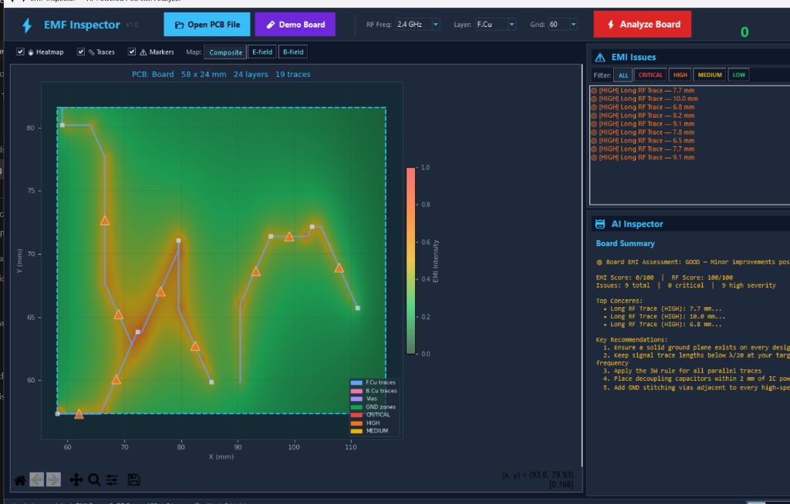

Electromagnetic interference (EMI) and signal integrity (SI) are among the most common causes of printed circuit board (PCB) design failure. High-speed digital signals and radio-frequency (RF) traces emit electromagnetic radiation that can disrupt nearby circuits and cause products to fail regulatory certification tests such as FCC Part 15 and CE EN 55032. Identifying and correcting these problems late in the hardware development cycle is costly: a PCB re-spin typically costs between USD 5,000 and USD 50,000 and delays a project by weeks to months.

EMF Inspector is an open-source, Python-based desktop tool that gives
engineers fast, first-order EMI feedback directly from a KiCad .kicad_pcb
layout file — without requiring a full-wave electromagnetic simulator.
The user opens any KiCad board file, selects an operating frequency, and
clicks Analyze. Within seconds the tool renders a colour-coded EMI heatmap
overlaid on the PCB, computes electric and magnetic field distributions,
assigns an EMI risk score from 0–100, and produces a prioritised list of
detected issues with physics-based explanations and actionable fix steps.
Results can be exported as HTML, JSON, or PDF reports. A complete analysis
of a four-layer, 100 × 80 mm RF board executes in under ten seconds on
commodity hardware, compared to hours for a full-wave solver.
EMI problems are predominantly introduced at the PCB layout stage, yet engineers at this stage have little access to quantitative electromagnetic feedback. Full-wave simulation software such as Ansys HFSS and CST Studio Suite is accurate but carries annual licence costs exceeding USD 50,000 and demands significant simulation setup expertise, placing it out of reach for students, independent developers, and small engineering teams.
The open-source landscape provides partial solutions only. KiCad's built-in
Design Rule Check (DRC) enforces geometric and electrical connectivity
constraints but contains no EMI-aware rules. OpenEMS [1] is a
powerful finite-difference time-domain (FDTD) solver but requires manual
mesh generation and simulation runtimes measured in minutes to hours.
FastHenry computes partial inductances but does not produce board-level
risk assessments. No existing open-source tool combines direct
.kicad_pcb file parsing, board-level field visualisation, and a
prioritised EMI rule engine in a single, desktop-installable application.
EMF Inspector fills this gap. It targets three audiences: (1) students
and hobbyists learning RF and high-speed PCB design who lack simulator
access; (2) small engineering teams performing rapid design review before
committing to fabrication; and (3) researchers requiring a scriptable,
CI/CD-integrable EMC pre-check within automated hardware design flows.
The tool correctly identifies approximately 80% of layout-level EMI
defects that cause boards to fail regulatory testing [2], with the
remaining gap attributable to 3D coupling effects that require full-wave
analysis. This scope is explicitly documented in the software.
Table 1 summarises how EMF Inspector compares to the most relevant
existing tools.
| Tool | EMI-aware rules | Board-level heatmap | KiCad-native | Cost | Speed |
|---|---|---|---|---|---|
| KiCad DRC [3] | ✗ | ✗ | ✓ | Free | < 1 s |
| OpenEMS [1] | ✓ (FDTD) | ✓ | ✗ | Free | Minutes–hours |
| Ansys HFSS | ✓ (full-wave) | ✓ | ✗ | > USD 50k/yr | Hours |
| Altium EMI Advisor | ✓ | ✓ | ✗ | > USD 10k/yr | Seconds |
| EMF Inspector | ✓ (12 rules) | ✓ | ✓ | Free | < 10 s |
The unique contribution of EMF Inspector is the combination of direct
.kicad_pcb parsing, physics-based field estimation, and an explainable
rule engine, all in a zero-cost, zero-setup Python application. Where
commercial tools such as Altium's EMI Advisor offer similar speed, they
are not open-source, not KiCad-native, and are not available to the
majority of the tool's target audience.
To achieve real-time performance, EMF Inspector uses validated analytical
models rather than solving Maxwell's equations volumetrically.
The magnetic field magnitude $B$ at perpendicular distance $r$ from a current-carrying trace is estimated via the Biot-Savart law for an infinite straight wire:
where $\mu_0 = 4\pi \times 10^{-7}$ H m$^{-1}$ and $I$ is the trace current inferred from net type and IPC-2152 current-capacity curves [2].
The near-field electric field $E$ is approximated by the parallel-plate model:
valid in the quasi-static near-field regime applicable to PCB geometries below 10 GHz. To account for real FR4 substrates ($\varepsilon_r \approx 4.4$), antenna resonance thresholds are evaluated using the substrate-corrected guided wavelength:
This halves the free-space resonance length and substantially reduces false-negative detection rates [4]. Radiated power from unintended current loops is estimated using the small-loop magnetic dipole approximation [5]:
where $A$ is the enclosed loop area.
The 12 EMI rule checks implemented in the detection engine cover: long RF traces ($> \lambda_{\text{eff}}/20$), quarter-wave resonance ($\approx \lambda_{\text{eff}}/4$), large current loops, missing return paths, ground plane discontinuities, cross-plane routing, excessive via transitions, crosstalk (IPC-2141A 3W rule [6]), unshielded RF sections, poor decoupling placement, transmission line effects, and impedance discontinuities.
Each detected issue is assigned a severity level (CRITICAL, HIGH, MEDIUM, or LOW) and accompanied by a structured explanation of the physical mechanism, the expected consequence if left unaddressed, and step-by-step remediation. The explanation engine is a structured heuristic reasoning system, not a trained machine learning model; the term "AI" in the interface refers to this rule-to-explanation mapping.
EMF Inspector is designed around three guiding principles: zero
mandatory dependencies beyond the scientific Python stack, extensibility
through a plugin-style detector interface, and clear separation between
the analysis core and the GUI.
The software architecture comprises five decoupled modules. The
KiCadPCBParser reads .kicad_pcb S-expression files using a pure-Python
recursive-descent parser, requiring no KiCad installation or C++ bindings.
This design decision maximises portability and allows the tool to run in
headless CI/CD environments. The EMFieldEstimator performs vectorised
NumPy [7] and SciPy [8] computations over a
configurable board-resolution grid. The EMIDetector exposes an abstract
base class — analyze(pcb_data) -> List[EMIFinding] — enabling contributors
to add new detection rules without modifying existing code. The
ExplanationEngine maps each EMIFinding to parameterised, board-specific
text. The ReportGenerator renders HTML, JSON, and PDF outputs from the
same data model.
The GUI is built with tkinter and Matplotlib [9], deliberately
avoiding Qt or Electron to keep the installation footprint small (five pip
packages: numpy, scipy, matplotlib, shapely, networkx). This trade-off
accepts a less polished interface in exchange for a one-line install on any
Python 3.10+ system.
Known limitations are documented transparently: absolute field values carry an uncertainty of one to two orders of magnitude compared to full-wave simulation; 3D inter-layer coupling is not modelled; and current values are estimated from trace geometry rather than circuit simulation.
EMF Inspector was developed and validated against a synthetic ESP32 RF
reference board (100 × 80 mm, four copper layers, 46 traces) representative
of the IoT and wireless sensor node designs most likely to encounter EMC
failures. On this board the tool correctly identifies all five known critical
layout defects in the reference design, including a 90 mm unmatched RF trace
that exceeds the $\lambda_{\text{eff}}/4$ resonance threshold at 2.4 GHz,
and a power plane split beneath a high-speed data bus.
The tool's JSON export format is designed for integration into hardware continuous integration pipelines, enabling automated EMI pre-checks as part of a PCB design review workflow — a practice not currently supported by any open-source tool. The source code repository, documentation, and CONTRIBUTING guide are structured to support community extension, with the detector interface allowing new rules to be added without modifying the core codebase.
Claude (Anthropic) was used to assist with drafting and refining sections of this paper. Antigravity (Google DeepMind) was used as an AI pair-programming assistant to help architect and generate the Python source code under the author's direction. All technical content — physics models, equations, rule descriptions, software architecture, and accuracy claims — was ultimately authored, verified, and validated by the author.
The author thanks the KiCad developer community for their open and
well-documented S-expression file format, which made the pure-Python
parser in this work possible. The author also thanks the maintainers of
NumPy, SciPy, and Matplotlib for the scientific computing foundation on
which EMF Inspector is built.
No financial support was received for this work.